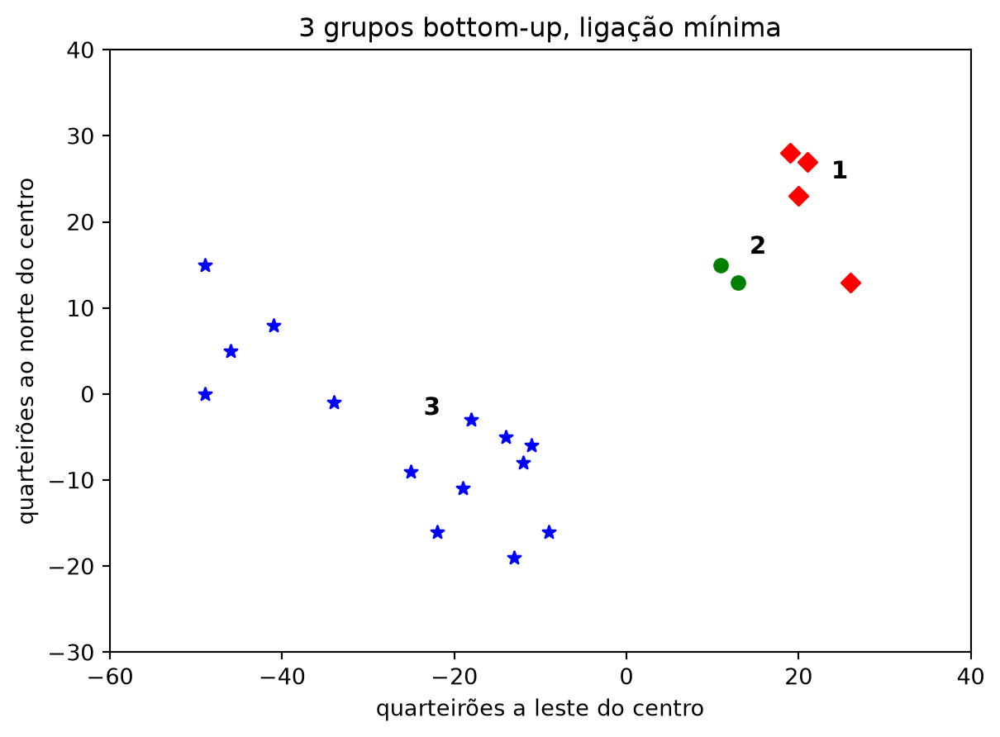
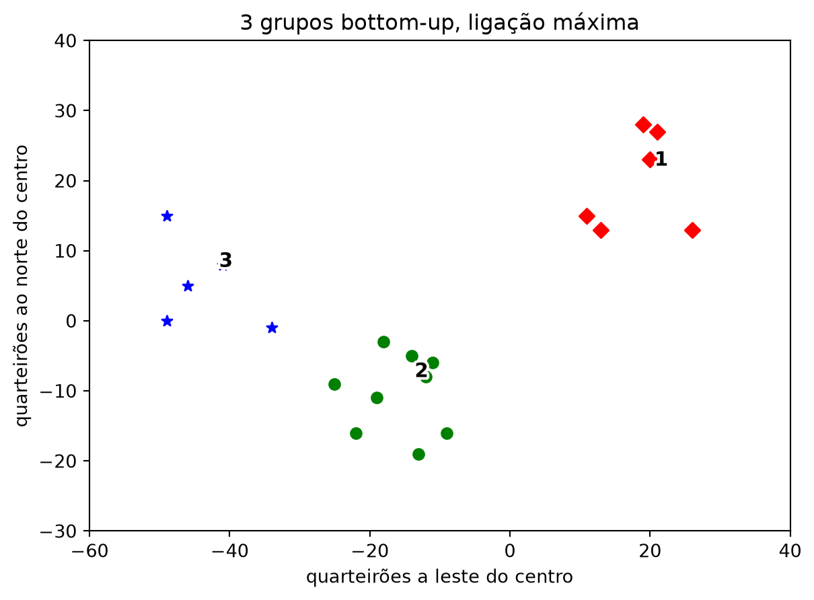

from typing import NamedTuple, Union, List
from scratch.linear_algebra import Vector
class Leaf(NamedTuple):
value: Vector
leaf1 = Leaf([10, 20])
leaf2 = Leaf([30, -15])Clustering Hierárquico Bottom-Up
Nota
Esta seção corresponde a Bottom-Up Hierarchical Clustering, do capítulo 20 de Grus (2019).
O k-means começa pela resposta — k grupos — e vai ajustando até que ela pare de mudar. Uma abordagem alternativa faz o contrário: começa com o máximo de grupos possível e vai juntando.
O clustering hierárquico bottom-up é este algoritmo:
- Faça de cada entrada um grupo de um elemento só.
- Enquanto houver mais de um grupo, encontre os dois grupos mais próximos e funda-os.
No fim sobra um grupo gigante contendo tudo. Se, no caminho, você anotar a ordem em que as fusões aconteceram, pode desfazê-las: para obter três grupos, basta desfazer as duas últimas fusões.
Repare no que isso muda. O k-means devolve uma partição para o k que você pediu, e nada mais. O bottom-up devolve uma hierarquia — uma árvore de fusões — da qual se extrai qualquer número de grupos depois, sem treinar de novo.
Representando os grupos
Os valores vivem em grupos-folha, representados como NamedTuple:
E as fusões produzem grupos merged, também NamedTuple, que guardam os filhos e a ordem em que a fusão aconteceu:
class Merged(NamedTuple):
children: tuple
order: int
merged = Merged((leaf1, leaf2), order=1)
Cluster = Union[Leaf, Merged]
Nota
Merged.children deveria ser anotado como Tuple[Cluster, Cluster], mas Cluster é um tipo recursivo — ele aparece dentro da própria definição —, e o verificador mypy não aceita isso. Fica tuple, uma anotação mais fraca do que a realidade. Vale saber que acontece: nem sempre o sistema de tipos consegue escrever o que o código de fato faz.
Um grupo pode conter outros grupos, então recuperar os valores dentro dele é uma recursão:
def get_values(cluster: Cluster) -> List[Vector]:
if isinstance(cluster, Leaf):
return [cluster.value]
else:
return [value
for child in cluster.children
for value in get_values(child)]
assert get_values(merged) == [[10, 20], [30, -15]]Distância entre grupos, e a decisão escondida nela
Para fundir “os dois grupos mais próximos” é preciso definir o que é a distância entre dois grupos. Aqui aparece a decisão mais importante da seção, e ela não tem resposta única.
from typing import Callable
from scratch.linear_algebra import distance
def cluster_distance(cluster1: Cluster,
cluster2: Cluster,
distance_agg: Callable = min) -> float:
"""
calcula todas as distâncias par a par entre cluster1 e cluster2
e aplica a função de agregação distance_agg à lista resultante
"""
return distance_agg([distance(v1, v2)
for v1 in get_values(cluster1)
for v2 in get_values(cluster2)])A função calcula todas as distâncias entre um ponto de um grupo e um ponto do outro, e depois resume essa lista com uma função de agregação. Qual função você passa é o que se chama, na literatura, de critério de ligação:
min— a distância entre os grupos é a do par mais próximo. Dois grupos se fundem assim que se tocam em qualquer ponto, o que produz grupos alongados, em forma de cadeia.max— a distância é a do par mais distante. Fundem-se os dois grupos que cabem na menor bola possível, o que produz grupos compactos e arredondados.- A média das distâncias também é comum, e fica entre as duas.
O padrão da função é min. Guarde isso: o mesmo algoritmo, sobre os mesmos dados, vai dar respostas diferentes conforme esse argumento, e nenhuma delas é a errada.
O algoritmo
Falta anotar a ordem das fusões. A convenção é que números menores representam fusões mais tardias — a última fusão de todas recebe ordem 0. Assim, “desfazer as fusões mais recentes” é percorrer as ordens da menor para a maior. Folhas nunca foram fundidas, então recebem infinito:
def get_merge_order(cluster: Cluster) -> float:
if isinstance(cluster, Leaf):
return float('inf') # nunca foi fundido
else:
return cluster.order
def get_children(cluster: Cluster):
if isinstance(cluster, Leaf):
raise TypeError("Leaf has no children")
else:
return cluster.childrenCom isso, o algoritmo inteiro:
from typing import Tuple
def bottom_up_cluster(inputs: List[Vector],
distance_agg: Callable = min) -> Cluster:
# Começa com todas as folhas
clusters: List[Cluster] = [Leaf(input) for input in inputs]
def pair_distance(pair: Tuple[Cluster, Cluster]) -> float:
return cluster_distance(pair[0], pair[1], distance_agg)
# enquanto sobrar mais de um grupo...
while len(clusters) > 1:
# encontra os dois grupos mais próximos
c1, c2 = min(((cluster1, cluster2)
for i, cluster1 in enumerate(clusters)
for cluster2 in clusters[:i]),
key=pair_distance)
# remove os dois da lista de grupos
clusters = [c for c in clusters if c != c1 and c != c2]
# funde os dois, com ordem de fusão = nº de grupos restantes
merged_cluster = Merged((c1, c2), order=len(clusters))
# e acrescenta a fusão
clusters.append(merged_cluster)
# quando sobra um só grupo, devolve
return clusters[0]E a função que extrai o número de grupos que se quiser, desfazendo fusões:
def generate_clusters(base_cluster: Cluster,
num_clusters: int) -> List[Cluster]:
# começa com uma lista contendo só o grupo-base
clusters = [base_cluster]
# enquanto não houver grupos suficientes...
while len(clusters) < num_clusters:
# escolhe o último grupo a ter sido fundido
next_cluster = min(clusters, key=get_merge_order)
# remove-o da lista
clusters = [c for c in clusters if c != next_cluster]
# e acrescenta os filhos dele à lista (ou seja, desfaz a fusão)
clusters.extend(get_children(next_cluster))
# quando houver grupos suficientes...
return clustersOs mesmos vinte usuários
Voltemos às localizações da seção 17.3:
inputs: List[Vector] = [[-14, -5], [13, 13], [20, 23], [-19, -11], [-9, -16],
[21, 27], [-49, 15], [26, 13], [-46, 5], [-34, -1],
[11, 15], [-49, 0], [-22, -16], [19, 28], [-12, -8],
[-13, -19], [-41, 8], [-11, -6], [-25, -9], [-18, -3]]
base_cluster = bottom_up_cluster(inputs)
tres_grupos = [get_values(cluster)
for cluster in generate_clusters(base_cluster, 3)]
sorted(len(grupo) for grupo in tres_grupos)[2, 4, 14]from matplotlib import pyplot as plt
import matplotlib.patheffects as pe
from scratch.linear_algebra import vector_mean
def desenha_grupos(grupos: List[List[Vector]], titulo: str) -> None:
# mesma função da seção 17.3: a cor vem do posto do grupo na ordem
# leste-para-oeste, não do índice que o algoritmo lhe deu -- é o que
# torna as figuras dos dois algoritmos comparáveis entre si
grupos = sorted(grupos, key=lambda grupo: -vector_mean(grupo)[0])
for i, (grupo, marca, cor) in enumerate(zip(grupos, ['D', 'o', '*'],
['r', 'g', 'b']), start=1):
xs, ys = zip(*grupo)
plt.scatter(xs, ys, color=cor, marker=marca)
x, y = vector_mean(grupo)
numero = plt.annotate(str(i), (x, y), textcoords='offset points',
xytext=(9, 9), fontsize=11, fontweight='bold')
numero.set_path_effects([pe.withStroke(linewidth=3, foreground='white')])
plt.title(titulo)
plt.xlabel("quarteirões a leste do centro")
plt.ylabel("quarteirões ao norte do centro")
plt.axis([-60, 40, -30, 40])
plt.gca().set_aspect('equal')
plt.show()
desenha_grupos(tres_grupos, "3 grupos bottom-up, ligação mínima")
O resultado é bem diferente do k-means. Catorze dos vinte usuários caíram num grupo só — as estrelas azuis, que vão do extremo oeste do mapa até o centro-sul —, enquanto os seis do canto nordeste, que o k-means tratava como um grupo coeso, foram partidos em quatro, os losangos vermelhos, mais dois, os círculos verdes.
É o efeito da ligação min que a seção anterior antecipou: como basta que dois grupos se toquem em um ponto para se fundirem, os grupos crescem em cadeia. Cada usuário do meio do mapa serve de ponte entre o vizinho da esquerda e o da direita, e a cadeia inteira vira um grupo.
Trocando um argumento
Agora com max, e nada mais:
base_cluster_max = bottom_up_cluster(inputs, max)
tres_grupos_max = [get_values(cluster)
for cluster in generate_clusters(base_cluster_max, 3)]
desenha_grupos(tres_grupos_max, "3 grupos bottom-up, ligação máxima")
Esta é a mesma divisão que o k-means encontrou com k = 3. Não “parecida”: a mesma — e, como a cor de cada grupo vem da posição dele no mapa, as duas figuras podem ser sobrepostas. Dá para verificar sem depender do olho, comparando as duas partições ponto a ponto:
import random
from scratch.clustering import KMeans
random.seed(12)
clusterer = KMeans(k=3)
clusterer.train(inputs)
atribuicoes = [clusterer.classify(ponto) for ponto in inputs]
grupos_kmeans = [[p for p, a in zip(inputs, atribuicoes) if a == i]
for i in range(3)]
def como_conjunto(grupos):
"""a partição, sem depender da ordem dos grupos nem dos pontos"""
return sorted(sorted(tuple(ponto) for ponto in grupo) for grupo in grupos)
assert como_conjunto(grupos_kmeans) == como_conjunto(tres_grupos_max)
for grupo in tres_grupos_max:
print(f"{len(grupo):2d} usuários, centro em "
f"{[round(coord, 2) for coord in vector_mean(grupo)]}") 6 usuários, centro em [18.33, 19.83]
5 usuários, centro em [-43.8, 5.4]
9 usuários, centro em [-15.89, -10.33]Dois algoritmos sem nenhum parentesco — um que sorteia atribuições e itera até convergir, outro que funde pares deterministicamente de baixo para cima — chegaram exatamente à mesma resposta. E o mesmo algoritmo hierárquico, com um único argumento trocado, chegou a uma resposta completamente diferente.
A lição não é “a ligação máxima é melhor”. É que agrupar não é uma operação, é uma família de decisões: qual algoritmo, qual noção de distância entre grupos, quantos grupos. Cada combinação define o que conta como “parecido”, e o conjunto de dados aceita todas elas sem reclamar.
Quando duas escolhas independentes concordam — como acontece aqui —, isso é uma evidência real de que a estrutura está nos dados e não no método. É o mais próximo de uma validação que este capítulo consegue oferecer, e repare no quanto é mais fraco do que uma acurácia medida em dados de teste.
Três diferenças práticas em relação ao k-means
Não há semente. Repare que nenhum agrupamento desta seção precisou de random.seed — o único que fixa semente é o treino do k-means, para comparação. O bottom-up é determinístico: dados os mesmos pontos e a mesma ligação, ele sempre devolve a mesma árvore. Depois de duas seções lidando com ótimos locais e execuções que discordam entre si, essa propriedade não é pouca coisa.
A hierarquia é aninhada por construção. A seção 17.3 avisou que a solução do k-means com k + 1 grupos não é necessariamente um refinamento da solução com k. Aqui é, e não por sorte: os três grupos saem de desfazer uma fusão a mais na mesma árvore que produziu os dois. É a mesma estrutura, cortada em outra altura.
E ele é caro. Muito caro. Dá para contar quantas distâncias ponto a ponto o algoritmo calcula, aproveitando que distance_agg recebe a lista inteira:
contagem = 0
def min_contando(distancias: List[float]) -> float:
global contagem
contagem += len(distancias)
return min(distancias)
bottom_up_cluster(inputs, min_contando)
print(f"distâncias ponto a ponto calculadas: {contagem}")distâncias ponto a ponto calculadas: 3089Três mil distâncias para agrupar vinte pontos. Compare com o k-means: cada passagem dele compara os vinte pontos com as três médias, o que dá sessenta distâncias, e ele converge em pouquíssimas passagens — o total fica na casa da centena. A razão da diferença é que cluster_distance recalcula, a cada fusão, todas as distâncias entre todos os pares de pontos dos dois grupos — inclusive as que já haviam sido calculadas dezenas de vezes antes. É uma implementação assombrosamente ineficiente, e a correção é conhecida: pré-calcular a distância entre cada par de entradas uma única vez e consultar essa tabela dentro de cluster_distance. Uma versão realmente eficiente ainda guardaria as distâncias entre grupos de um passo para o seguinte.
AvisoUm defeito silencioso no
bottom_up_cluster
O bottom_up_cluster remove os dois grupos fundidos com [c for c in clusters if c != c1 and c != c2], e c != c1 compara NamedTuples por valor. Duas folhas com as mesmas coordenadas são objetos distintos — is diria que não são a mesma —, mas são iguais por ==, e é a igualdade que o filtro usa. O defeito mora exatamente nessa distinção: o filtro pretendia remover aqueles dois grupos e remove todos os que se parecem com eles.
Enquanto houver no máximo duas entradas idênticas, isso não aparece: as duas são exatamente o par mais próximo (distância zero), são fundidas juntas, e a remoção dupla não faz falta. Com três ou mais, os pontos excedentes são apagados da lista sem nunca entrarem na árvore:
for extras in [1, 2, 3, 4]:
entradas = inputs + [[13, 13]] * extras
arvore = bottom_up_cluster(entradas)
print(f"{len(entradas)} entradas -> {len(get_values(arvore))} folhas na árvore")21 entradas -> 21 folhas na árvore
22 entradas -> 21 folhas na árvore
23 entradas -> 21 folhas na árvore
24 entradas -> 21 folhas na árvoreNenhuma exceção, nenhum aviso: os pontos simplesmente somem. E coordenadas repetidas são comuns em dados reais — duas medições idênticas, dois usuários no mesmo prédio, dois pixels da mesma cor.
Um livro inteiro depois, o padrão deve estar reconhecível: o erro perigoso não é o que estoura, é o que devolve uma resposta plausível. Este devolve uma árvore perfeitamente bem formada, com menos dados do que você entregou.
DicaNa prática:
scikit-learn e scipy
O equivalente na biblioteca é o AgglomerativeClustering, e o critério de ligação é um parâmetro explícito:
from sklearn.cluster import AgglomerativeClustering
AgglomerativeClustering(n_clusters=3, linkage='single').fit(inputs) # o nosso min
AgglomerativeClustering(n_clusters=3, linkage='complete').fit(inputs) # o nosso max
AgglomerativeClustering(n_clusters=3, linkage='average').fit(inputs) # a média
AgglomerativeClustering(n_clusters=3, linkage='ward').fit(inputs) # outro critérioward é o padrão da biblioteca e não tem equivalente no que escrevemos: em vez de agregar distâncias entre pontos, ele funde o par de grupos que menos aumenta a soma dos erros ao quadrado — a mesma quantidade que o k-means minimiza. É o critério que costuma dar resultados mais parecidos com os do k-means, o que é coerente com o que a ligação max mostrou acima.
Para desenhar a árvore de fusões — o dendrograma, que é a visualização natural deste algoritmo e que não chegamos a produzir aqui —, a ferramenta é o scipy:
from scipy.cluster.hierarchy import linkage, dendrogram
Z = linkage(inputs, method='single')
dendrogram(Z)O Z que o scipy devolve é a mesma informação que a nossa árvore de Merged guarda: quem se fundiu com quem, em que ordem e a que distância. A diferença é que ele registra também a altura de cada fusão, e é essa altura que permite cortar a árvore por distância — “todos os grupos cujos membros estão a menos de 10 quarteirões uns dos outros” — em vez de por número de grupos. É outra forma de não ter que escolher k.
Fim do livro
Este é o último algoritmo do livro, e é apropriado que ele venha do único capítulo sem resposta certa.
Os dezesseis capítulos anteriores construíram uma sequência confortável: um modelo, uma métrica, um número que diz se funcionou. A regressão tinha o R², o classificador tinha a acurácia, a rede neural tinha a perda no conjunto de teste. Havia sempre um lugar para onde olhar e saber se o trabalho estava certo. Este capítulo tirou isso, e o que sobrou — julgar se um agrupamento é útil olhando para o que caiu dentro dele — é, na verdade, o estado normal de boa parte do trabalho real. A confortável era a exceção.
O Capítulo 1 prometeu duas coisas. A primeira era abrir as caixas-pretas, e vale conferir o que foi cumprido. Você escreveu, do zero e em Python puro, os vetores e o produto escalar, o gradiente descendente que treina cinco dos modelos, o classificador por vizinhos, o Naive Bayes, três formas de regressão, as árvores de decisão, a retropropagação de uma rede neural, e agora dois algoritmos de agrupamento. Nenhum deles é mais uma chamada de função que devolve um número: são coisas que você viu por dentro e pode julgar.
A segunda promessa era reconhecer usos da área que ajudam pessoas e usos que as manipulam — e perceber que a técnica é a mesma nos dois. Este capítulo é onde ela se paga, e não por acaso: o k-means que agrupou vinte usuários por localização, para decidir onde fazer encontros, é o mesmo que segmenta um cadastro de eleitores por idade, renda e composição familiar, para decidir que mensagem cada grupo recebe. O capítulo 1 citou as duas campanhas presidenciais americanas quando você ainda não sabia escrever nem uma coisa nem outra. Agora sabe, e a distância entre os dois usos não está em lugar nenhum do algoritmo — está inteira em quem escolheu os atributos, em quem definiu o que é um grupo útil, e no que se faz com os grupos depois. O código é indiferente. Você não precisa ser.
Três dívidas ficaram, e é melhor nomeá-las do que fingir que não existem. A primeira é de ferramenta: o código deste livro é lento e verboso de propósito, e nada do que você escreveu aqui deve ir para produção — em produção usa-se numpy, pandas e scikit-learn, e agora você tem como avaliar o que essas bibliotecas fazem em vez de apenas confiar. A segunda é de escala: os conjuntos de dados aqui têm dezenas ou centenas de linhas, e problemas de verdade trazem dificuldades — dados sujos, faltantes, enviesados — que nenhum capítulo resolveu. A terceira é de assunto: processamento de linguagem natural, análise de redes, sistemas de recomendação e o resto do que o livro-texto cobre em seus capítulos finais ficaram fora do escopo desta disciplina, e o livro-texto continua ali para quem quiser seguir.
Fica também o hábito que este material tentou construir, e que é o mais transferível de tudo: desconfiar de um resultado que parece bom. A média que não significava nada no Capítulo 1, o classificador que lia os cortes dos próprios dados, o R² que subia com colunas de ruído, a curva de erro que descia sozinha, o amarelo que sumiu de um quadro cujo título tem Yellow, a árvore de fusões que devolveu menos pontos do que recebeu. Nenhum desses erros estourou; todos devolveram uma resposta plausível. A diferença entre quem os pega e quem não os pega não está na ferramenta — está em saber o que a ferramenta está fazendo.
É para isso que se abrem caixas-pretas.
Grus, Joel. 2019. Data Science from Scratch: First Principles with Python. 2nd ed. O’Reilly Media.